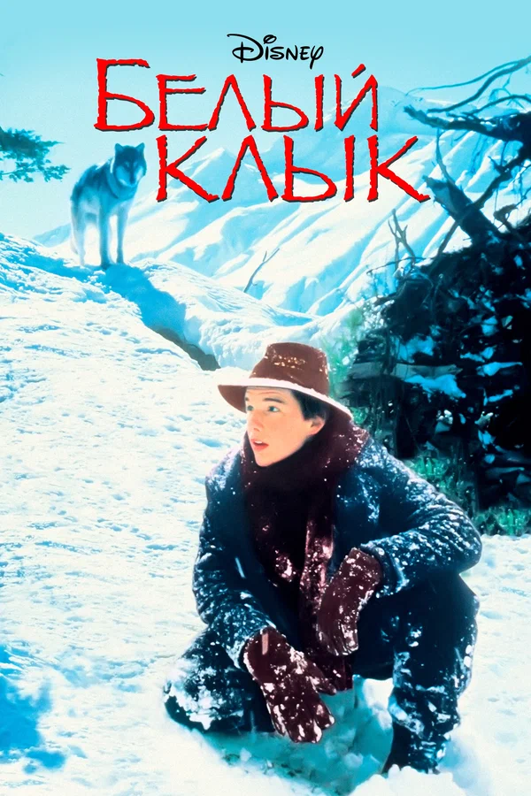

Белый клык

7.8
Обзор
История о волке Белый клык, который остался сиротой, после того как
охотник убил его мать и юноше по имени Джек, прибывшем на Клондайк во
времена Золотой Лихорадки на участок, оставленный ему в наследство
отцом... Джек и Белый Клык то встречаются, то расстаются, то вновь
обретают друг друга. Эта захватывающая история дружбы мальчика и волка
будет интересна мальчишкам, увлекающимся приключениями.